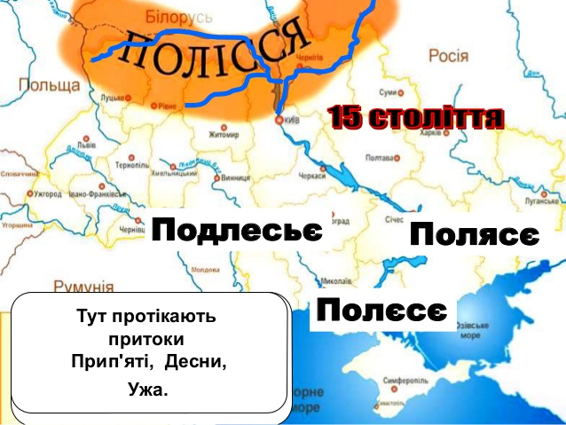
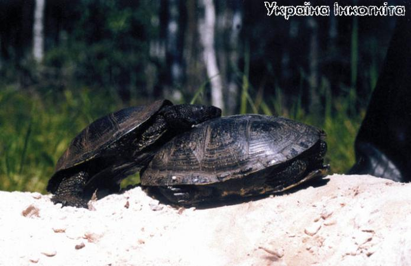
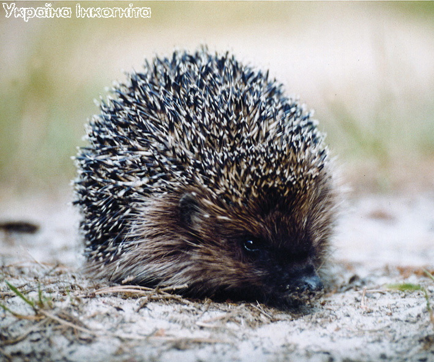
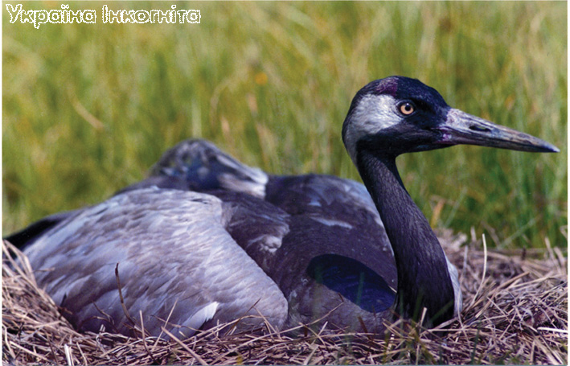
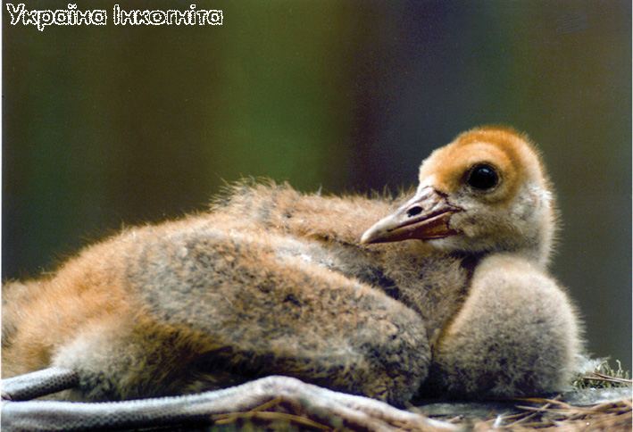
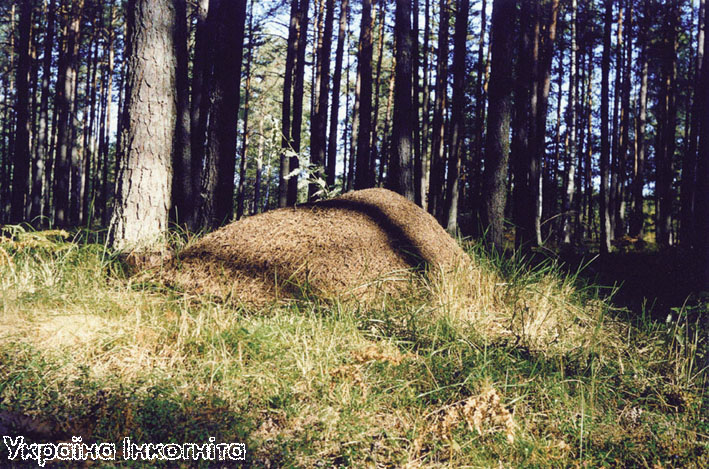
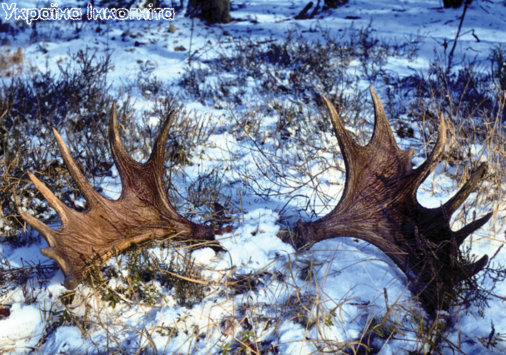

Тваринний світ Полісся

Безкраї поліські ліси є одним з останніх притулків диких тварин в Україні. Лише в Карпатах їх мешкає більше ніж на Поліссі. Основу фауни Поліського природного заповідника становлять види бореального, або тайгового комплексу, такі як рись, лось, заєць білий, вухань, глухар, бородата сова та інші. Разом з людиною до Полісся проникли види, що раніше вважались степовими - вовк, сіра куріпка. Заплавна фауна представлена деркачем, видрою, норкою американською, єнотоподібним собакою та багатьма іншими видами.Ліси, болота, луки Поліського природного заповідника дають притулок величезній кількості тварин, птахів, комах. Блукаючи хащами резервату можна зустріти представників тайгових, широколистяних лісів, лісостепової зони та, навіть, степу.

Черепахи болотні. Хоча ці плазуни в заповіднику є нечисленними, але, інколи, на берегах Уборті, Болотниці та деяких інших рік можна спостерігати як вони ніжаться на сонечку та, навіть, їхні шлюбні забави.
Серед хребетних найбільше представництво мають птахи - їх тут 246 видів. Слід відмітити що в заповіднику є звичайними видами сіра чапля, сіра гуска, велика білобока гуска, сірий журавель, глухар, тетерук, рябчик, лунь болотний, сорокопуд-жулан, дрімлюга звичайна, бородата сова та інші. Деркач, що занесений до Європейського Червоного Списку, є звичайним на прилеглих до заповідника луках. Відносно велике представництво у заповіднику птахів занесених до Червоної Книги України.
Наприкінці весни та на початку літа пернаті відзначаються особливою активністю.
Хор синиць та жайворонків, дроздів та славок, сойок та зябликів, дзвінкий стукіт дятлів порушують в цей період лісову тишу. Численні хижі птахи шукають собі здобич в лісових хащах та на галявинах.
Одним з найцікавіших лісових птахів заповідника є глухар. Цей представник орнітофауни входить до числа найбільших в Україні (самець може важити до 6 кілограмів). Глухар - типовий представник тайги, в Поліссі він тримається лісів, у яких переважають хвойні породи. Споживає цей птах переважно рослинну їжу: хвою, бруньки, молоді пагони і ягоди, хоча інколи не гребує комахами та іншими безхребетними. Дуже цікавою є поведінка глухарів в період току. Самці в цей час навіть вчиняють бійки за самок. Самка відкладає у вистелене сухою травою заглиблення в грунті 7-9 яєць, з яких через 22-25 днів вилуплюються пташенята. Глухар занесений до Червоної книги України і потребує особливих заходів охорони, хоча в резерваті він є звичайним видом.

Їжак звичайний. Ця кумедна тваринка є звичайною в поліських лісах. Вона переважно комахоїдна, але інколи може вполювати дрібного гризуна
У Поліському заповіднику мешкає 49 видів ссавців, серед яких відносно багато "червонокнижних". Це борсук, горностай, рись європейська, видра річкова, заєць біляк. Соня ліщинова та вовк у заповіднику є звичайними видами і не потребують особливих заходів охорони, хоча у Західній Європі вони на межі зникнення і занесені до Європейського Червоного Списку.
На території заповідника досить часто можна зустріти таких екзотичних представників тваринного світу, як лось, козуля, олень благородний, кабан дикий, лисиця, куниця лісова, бобер річковий, білка звичайна, заєць русак, тхір лісовий, ласка, їжак звичайний та інші.
Дуже важливою складовою у харчовому ланцюзі є козуля. Існування великої популяції козулі в Поліському заповіднику сприяє присутності тут великих хижих ссавців вовка та, особливо, рисі (в раціоні останньої козуля становить значну частку).
Первісним ареалом козулі була лісостепова зона, але люди своєю сільськогосподарською діяльністю та мисливством витіснили цю граціозну тварину до лісової зони, на північ. Розрив ареалу спричинив утворення двох підвидів козулі - західно-європейської (саме вона мешкає у Поліссі) та східно-сибірсько-кавказької. Маса тіла західно-європейської козулі 20-37 кг, роги у довжину сягають 25-30 см. Харчуються ці тварини рослинною їжею. Основну частину їхнього раціону становить трава, а також молоді бруньки, листя чагарників та дерев.
Восени та зимою козулі живуть групами, які об'єднують до 10-12 особин різної статі та віку. Навесні групи розпадаються. В кінці травня - на початку червня у самок народжується по 2-3 козенят. Козенята майже не мають запаху, тому є малопомітними для хижаків. Козулі годують малих молоком до 2,5-3 місячного віку. Ростуть козенята швидко і вже до осені набирають масу 15-18 кг (половину маси дорослої тварини).
Дуже часто у заповіднику можна бачити сліди лося. Ця гігантська тварина (довжина 3 м, висота 2,3 м, вага до 570 кг) досить комфортно почуває себе в лісових хащах. Особливою активністю лосі відрізняються у вересні, коли у них настає період гону. В цей час вони можуть бути агресивними і становити небезпеку для людини.
Дикий кабан також досить численний на території резервату. За межами заповідника ця тварина часто гине від рук мисливців та браконьєрів, але тут йому нічого не загрожує. Місцеві жителі відмічають зменшення кількості диких кабанів в останні роки. Для них це чи не найзвичайніша тварина, яку можна дуже часто бачити в лісі.


Сірий журавель. Цей рідкісний в Україні птах є звичайним видом у заповіднику. В межах Жолобницької осушувальної системи навіть спостерігаються передвідлітні скупчення сірих журавлів.
Дикий кабан, або вепр, належить до родини свиней, має довжину до 2 м та вагу до 300 кг (останнім часом зустрічі з такими гігантами рідкісні, частіше маса дорослих самців не перевищує 180 кг, а самок 140 кг). Влітку основу його харчування складають соковиті трав'янисті рослини, цибульки багаторічників, личинки комах, що дістаються з грунту, дощові черв'яки, яйця мурашок, молюски, падло, жаби, мишоподібні гризуни та інше. Дуже люблять кабани плоди дуба - жолуді, тому найчастіше їхні сліди зустрічаються у дубняках. Добуваючи харчі, ці тварини перевертають величезну масу лісової підстилки і верхні шари грунту, чим сильно впливають на розвиток рослинності. Влітку кабани люблять влаштовувати ліжка в невеликих болотах, роблять вони це з метою позбавитись від кровососів. Гон у них відбувається в листопаді-грудні, а поросята народжуються в березні-квітні. Самка приводить 3-10 малят, для яких споруджує гайно із гілок ліщини, клена або інших рослин. Поросята ростуть відносно швидко і вже до осені важать 20-25 кг. Матері вони тримаються до появи наступного виводку. Головний природний ворог кабанів - вовк.
Поряд із ссавцями в заповіднику багато земноводних тварин (тритони звичайний та гребінчастий, ропухи зелена та сіра, жаби та ін.) та плазунів (черепаха болотна, ящірки прудка та живородяча, вуж звичайний, гадюка звичайна, мідянка, веретінниця).
У водоймах заповідника мешкає цікава, дуже схожа на рибу, безщелепна нижча хребетна тварина із класу круглоротих - мінога українська. Цей рідкісний вид занесено до Червоної книги України.
Ріки та озера заповідника не вирізняються значним різноманіттям видів риб. Найбільш поширеними є щука, плітка, карась, в'юн та окунь. Різноманітним і цікавим є світ безхребетних тварин резервату, але досліджений він порівняно слабо.
Серед комах Поліського заповідника на особливу увагу заслуговують мурахи. Сотні величезних куполів збудовано в лісах цими невтомними працівниками та безжалісними мисливцями. Найпоширенішим видом мурашок у мішаних лісах заповідника є Форміка, зокрема, Форміка Руфа, або руда лісова мурашка.

Мураха - санітар лісу. Всі ми пам'ятаємо гасла радянських часів про охорону лісу та повагу до мурашок. Вчені-лісоводи та працівники лісу провели величезну роботу щодо розселення мурах. Ці невеличкі комахи справді охороняють насадження від шкідників. Проходячи стежками заповідника можна зустріти десятки величезних мурашників збудованих переважно мурахами Formika.
Форміка Руфа - це відносно велика, руда або червоно-бура лісова мураха, звичайна в Україні, але занесена до Європейського Червоного Списку, яка завдяки своїм кормодобувним якостям є особливо цінною для деревних насаджень. Мешкає вона по всій північній і середній Європі у листяних та мішаних лісах. Її гніздо - мурашник - найбільш часто є сім'єю з однією-єдиною плодючою самкою.
Самка-засновниця залишає гніздо, в якому вивелась, робить шлюбний політ, скидає крила і, знайшовши гніздо мурах іншого виду - фуска, проникає в нього, вбиває самку фуска і займає її місце. Робочі мурахи фуска починають годувати молоду самку руфа, виховують її розплід. Так виникає новий мурашник Форміка руфа. Живе він, як правило, не довше ніж його засновниця - 20-25 років. Якщо самка гине раніше, то вимирає уся сім'я.
В сім'ї Форміка особливу роль відіграють фуражири - мурахи, які збирають харчі для усієї сім'ї. З весни до осені тягнуть вони у гніздо мертвих жучків, мушок, метеликів, гусениць різних видів. У середнє за силою гніздо щохвилинно зноситься два-три десятки комах, за годину їх надходить вже тисячі півтори, за день - близько двадцяти тисяч (деякі науковці приводять значно більші цифри). В теплу пору й на рівному місці навантажені здобиччю мурахи рухаються із середньою швидкістю один метр за хвилину. Площа активного полювання навколо середнього за розміром мурашника перевищує двісті тисяч квадратних метрів. При п'ятиметровій висоті підйому мурах на дерева їх пасовищний простір складає мільйон кубометрів. І на цьому мільйоні кубометрів мурахи вбивають мільйони шкідливих для лісу комах. Вага мешканців мурашника близько 2,4 кг, а вага їхньої щоденної кормової пайки - 120 г (12 кг шкідників за 100 днів).
У Поліському заповіднику довгий час проводилося штучне розселення мурах родини Форміка. Комахи розселялись відводками (з одного відводку приблизно за п'ять років утворюється середній за розміром мурашник). Куполи мурашиних гнізд навіть обгороджували парканчиками, щоб уберегти їх від випадкових руйнувань тваринами та людьми (туристами, грибниками тощо) проводилась роз'яснювальна робота серед населення, але після розпаду СРСР ця велика справа почала занепадати.

Браконьєрство
В звичайному поліському поселенні в кожній третій хаті є мисливська рушниця, але лише одиниці власників офіційно реєструють свою зброю. Ще гірше ситуація з оформленням прав на полювання. Для декого з поліщуків через економічну скруту лісовий промисел (полювання в тому числі), поряд із домашнім господарством, є головним засобом для існування. Є і такі, що живуть виключно з полювання. Саме тому браконьєрство у Поліссі процвітає. Винищуються козулі, лосі, кабани, білки, куниці, бобри, водоплавні птахи та багато інших тварин. Серед браконьєрів з'явились справжні майстри, які за одну ніч, полюючи на мотоциклі (місцеві кажуть "на фару"), можуть добути до десятка зайців. Єгері та лісники твердять, що невдачі у боротьбі з порушниками є наслідком недосконалого законодавства, яке передбачає за браконьєрство до смішного малі штрафи та не створює стимулів для боротьби працівникам лісу
Текст Сергія Жили та Романа Маленкова. Фото Сергія Жили